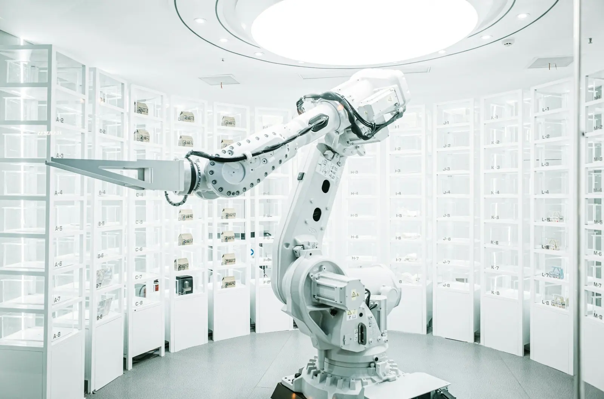

01 / 04
Solución 01
Hiperautomatización y Rediseño de Procesos
Arquitectura de procesos integrales e hiperautomatizaciónDiseñamos e implementamos ecosistemas digitales autónomos de punta a punta. Conectamos herramientas de última generación, desarrollo low-code y agentes de Inteligencia Artificial para erradicar por completo la carga operativa manual, transformando tareas tradicionales en flujos de trabajo inteligentes de alta velocidad y auto-optimizables.
Qué incluye
- Reingeniería de flujos de trabajo integrando agentes y asistentes cognitivos (GenAI).
- Desarrollo de automatizaciones avanzadas (Power Automate / low-code) y procesamiento inteligente de datos.
- Conexión inteligente y automatización de ecosistemas ERP y plataformas de negocio.
- Aceleración inteligente de ciclos financieros y optimización automatizada del Capital de Trabajo (Working Capital).